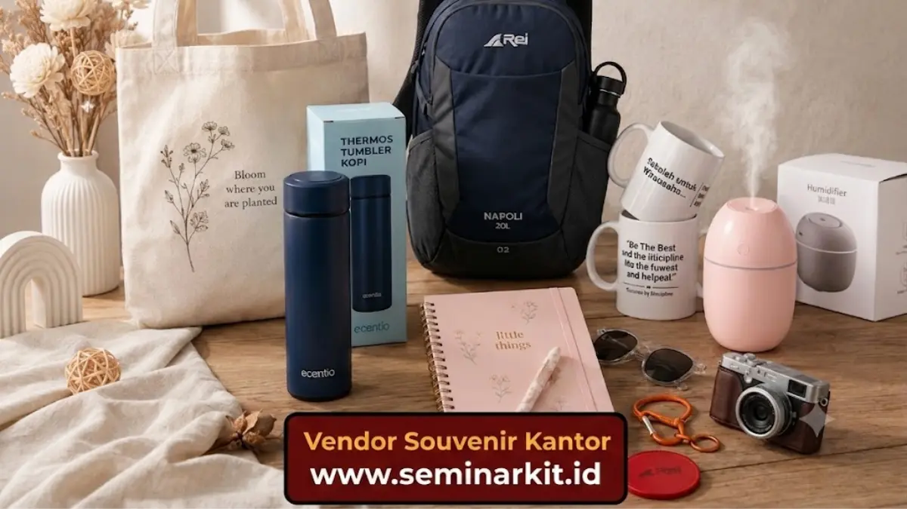

Cara memilih souvenir kantor sesuai budget adalah dengan menentukan total anggaran terlebih dahulu, membaginya berdasarkan jumlah penerima, lalu menyesuaikan jenis barang dengan sisa anggaran yang tersedia.
- Tentukan total anggaran sebelum memilih jenis souvenir kantor.
- Hitung biaya per unit berdasarkan jumlah penerima secara keseluruhan.
- Pertimbangkan biaya tambahan seperti cetak logo, kemasan, dan pengiriman.
- Bandingkan penawaran dari beberapa vendor sebelum memutuskan.
Bagaimana Cara Menghitung Anggaran Souvenir Kantor?
Cara menghitung anggaran souvenir kantor adalah dengan menetapkan total dana yang tersedia terlebih dahulu, kemudian membaginya dengan jumlah penerima untuk mengetahui estimasi biaya per unit barang.
Setelah mengetahui estimasi biaya per unit, perusahaan dapat mulai membandingkan pilihan jenis souvenir yang sesuai dengan kisaran harga tersebut.
Penting untuk menyisihkan sebagian anggaran sebagai cadangan guna mengantisipasi biaya tambahan yang mungkin muncul selama proses produksi.
Perusahaan juga sebaiknya memisahkan anggaran berdasarkan kategori penerima, misalnya anggaran khusus untuk klien korporat dan anggaran terpisah untuk karyawan internal, karena kebutuhan dan standar kualitas kedua kategori tersebut umumnya berbeda.

Apa Saja Komponen Biaya dalam Pembuatan Souvenir Kantor?
Komponen biaya dalam pembuatan souvenir kantor umumnya meliputi harga barang dasar, biaya cetak logo atau desain, biaya kemasan, serta biaya pengiriman ke lokasi acara.
Harga barang dasar biasanya dipengaruhi oleh jenis bahan dan tingkat kerumitan produksi. Biaya cetak logo dapat bervariasi tergantung teknik yang digunakan, seperti sablon, bordir, atau ukir, di mana masing-masing teknik memiliki tingkat kerumitan dan biaya yang berbeda.
Biaya kemasan turut memengaruhi kesan keseluruhan souvenir, terutama untuk souvenir yang ditujukan kepada klien korporat yang membutuhkan tampilan presentasi lebih eksklusif.
Sementara itu, biaya pengiriman perlu diperhitungkan terutama jika jumlah pesanan besar atau lokasi pengiriman berada di luar kota.
Bagaimana Cara Menghemat Biaya Souvenir Kantor Tanpa Menurunkan Kualitas?
Cara menghemat biaya souvenir kantor tanpa menurunkan kualitas adalah dengan memesan dalam jumlah besar sekaligus, memilih bahan yang efisien namun tetap tahan lama, dan merencanakan pemesanan jauh sebelum tenggat waktu acara.
Beberapa strategi penghematan yang umum diterapkan:
- Memesan dalam jumlah besar untuk mendapatkan harga satuan lebih rendah dari vendor.
- Memilih desain cetak sederhana namun tetap jelas dan profesional.
- Menghindari pemesanan mendadak yang biasanya dikenakan biaya tambahan untuk pengerjaan cepat.
- Memilih bahan yang efisien dari segi biaya namun tetap memenuhi standar kualitas minimal perusahaan.
- Bekerja sama dengan vendor secara berkelanjutan untuk mendapatkan harga langganan yang lebih kompetitif.
Bagaimana Cara Membandingkan Penawaran Vendor Souvenir Kantor?
Cara membandingkan penawaran vendor souvenir kantor adalah dengan meminta rincian harga secara lengkap, termasuk biaya tambahan, serta membandingkan kualitas sampel produk sebelum menentukan pilihan akhir.
Perusahaan sebaiknya tidak hanya membandingkan harga akhir semata, tetapi juga mempertimbangkan kualitas bahan, ketepatan waktu pengerjaan, dan reputasi vendor berdasarkan pengalaman kerja sama sebelumnya.
Vendor dengan harga sedikit lebih tinggi namun kualitas dan ketepatan waktu terjamin umumnya lebih menguntungkan dalam jangka panjang dibandingkan vendor termurah namun berisiko terlambat.
Menentukan anggaran secara terstruktur dan membandingkan penawaran vendor secara cermat dapat membantu perusahaan mendapatkan souvenir kantor berkualitas tanpa membebani anggaran operasional secara berlebihan. Untuk memahami manfaat jangka panjang dari investasi ini, simak pembahasan mengenai manfaat souvenir kantor bagi branding perusahaan.

Banner promosi: klik gambar untuk langsung terhubung ke WhatsApp tim sales.